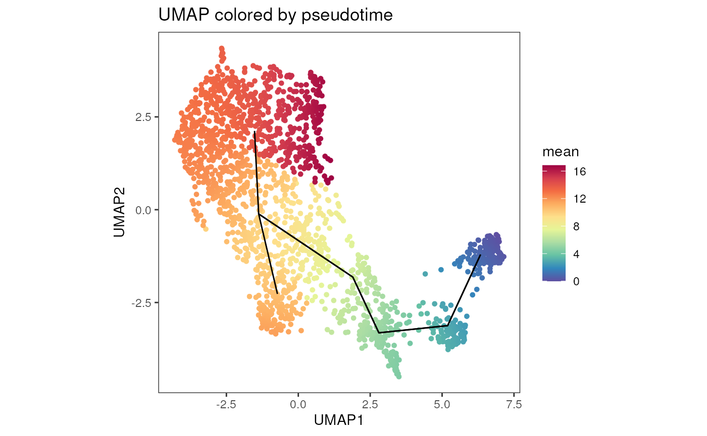
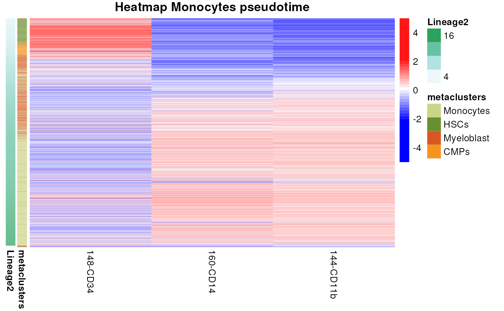

With cyCONDOR we implemented slingshot for
pseudotome analysis, following a workflow to calculate trajectories and
pseudotime.
This workflow can be applied to any type of HDFC data, nevertheless the interpretation of trajectories and preudotime should always be validated by other experiment of domain knowledge. We exemplified here with a subset of the cyTOF dataset from Bendall et al. 2011
If you use this workflow in your work please consider citing cyCONDOR and Street et al. (2018).
cyCONDOR implementation of slingshot follows the
tutorial from the NBIS
tutorial
Load an example dataset
We start here by loading an example condor object
already annotated.
condor <- readRDS("../.test_files/condor_pseudotime_016.rds")
plot_dim_red(fcd= condor,
expr_slot = NULL,
reduction_method = "umap",
reduction_slot = "pca_orig",
cluster_slot = "phenograph_filter_pca_orig_k_10",
param = "metaclusters",
title = "UMAP colored by Phenograph",
alpha= 1, dot_size = 1)
plot_marker_HM(fcd = condor,
expr_slot = "orig",
cluster_slot = "phenograph_filter_pca_orig_k_10",
cluster_var = "metaclusters",
cluster_rows = TRUE,
cluster_cols = TRUE,
title= "Marker expression Phenograph clustering")Pseudotime analysis
We can now calculate the pseudotime with different settings:
With no constrains on the start of the trajectory
condor <- runPseudotime(fcd = condor,
reduction_method = "umap",
reduction_slot = "pca_orig",
cluster_slot= "phenograph_filter_pca_orig_k_10",
cluster_var = "metaclusters",
approx_points = 5)## [1] "Slingshot - getLineages"
## [1] "Slingshot - getCurves"The output of is saved in
condor$pseudotime$slingshot_umap_pca_orig.
condor$pseudotime$slingshot_umap_pca_orig[1:5,]## Lineage1 Lineage2 mean
## export_Marrow1_00_SurfaceOnly_singlets.fcs_2 8.907685 NA 8.907685
## export_Marrow1_00_SurfaceOnly_singlets.fcs_9 NA 11.40754 11.407538
## export_Marrow1_00_SurfaceOnly_singlets.fcs_18 NA 12.15903 12.159027
## export_Marrow1_00_SurfaceOnly_singlets.fcs_27 NA 11.36649 11.366492
## export_Marrow1_00_SurfaceOnly_singlets.fcs_49 NA 11.36649 11.366492With a specific starting cluster
condor <- runPseudotime(fcd = condor,
reduction_method = "umap",
reduction_slot = "pca_orig",
cluster_slot= "phenograph_filter_pca_orig_k_10",
cluster_var = "metaclusters",
approx_points = 5,
start.clus = "CMPs",)## [1] "Slingshot - getLineages"
## [1] "Slingshot - getCurves"The output of is saved in
condor$pseudotime$slingshot_umap_pca_orig_CMPs.
condor$pseudotime$slingshot_umap_pca_orig_CMPs[1:5,]## Lineage1 Lineage2 Lineage3
## export_Marrow1_00_SurfaceOnly_singlets.fcs_2 NA 6.205366 NA
## export_Marrow1_00_SurfaceOnly_singlets.fcs_9 NA NA 6.238479
## export_Marrow1_00_SurfaceOnly_singlets.fcs_18 NA NA 7.201946
## export_Marrow1_00_SurfaceOnly_singlets.fcs_27 NA NA 5.609041
## export_Marrow1_00_SurfaceOnly_singlets.fcs_49 NA NA 5.388332
## mean
## export_Marrow1_00_SurfaceOnly_singlets.fcs_2 6.205366
## export_Marrow1_00_SurfaceOnly_singlets.fcs_9 6.238479
## export_Marrow1_00_SurfaceOnly_singlets.fcs_18 7.201946
## export_Marrow1_00_SurfaceOnly_singlets.fcs_27 5.609041
## export_Marrow1_00_SurfaceOnly_singlets.fcs_49 5.388332Testing all clusters as starting point
for (i in unique(condor$clustering$phenograph_filter_pca_orig_k_10$metaclusters)[1:5]) {
condor <- runPseudotime(fcd = condor,
reduction_method = "umap",
reduction_slot = "pca_orig",
cluster_slot= "phenograph_filter_pca_orig_k_10",
cluster_var = "metaclusters",
approx_points = 5,
start.clus = i)
}## [1] "Slingshot - getLineages"
## [1] "Slingshot - getCurves"
## [1] "Slingshot - getLineages"
## [1] "Slingshot - getCurves"
## [1] "Slingshot - getLineages"
## [1] "Slingshot - getCurves"
## [1] "Slingshot - getLineages"
## [1] "Slingshot - getCurves"
## [1] "Slingshot - getLineages"
## [1] "Slingshot - getCurves"Visualize the result of slingshot analysis
It is possible to use the plot_dim_red function to plot
the result of pseudotime analysis overlayed on the UMAP coordinates.
plot_dim_red(fcd = condor,
expr_slot = "orig",
reduction_method = "umap",
reduction_slot = "pca_orig",
cluster_slot = "phenograph_filter_pca_orig_k_10",
add_pseudotime = TRUE,
pseudotime_slot = "slingshot_umap_pca_orig",
param = "mean",
order = T,
title = "UMAP colored by pseudotime",
facet_by_variable = FALSE,
raster = TRUE,
alpha = 1,
dot_size = 1) +
geom_path(data = condor$extras$slingshot_umap_pca_orig$lineages %>% arrange(Order), aes(group = Lineage), size = 0.5)## Warning: Using `size` aesthetic for lines was deprecated in ggplot2 3.4.0.
## ℹ Please use `linewidth` instead.
## This warning is displayed once every 8 hours.
## Call `lifecycle::last_lifecycle_warnings()` to see where this warning was
## generated.
Heatmap visualization of monocytes trajectory
We provide here some custom code to visualize the pseudotime, nevertheless many visualization can be performed on this data depending on the biological question.
selections <- rownames(condor$clustering$phenograph_filter_pca_orig_k_10[condor$clustering$phenograph_filter_pca_orig_k_10$metaclusters %in% c("HSCs", "CMPs", "Myeloblast", "Monocytes"), ])
condor_mono <- filter_fcd(fcd = condor,
cell_ids = selections)
expression <- condor_mono$expr$orig
anno <- cbind(condor_mono$clustering$phenograph_filter_pca_orig_k_10[, c("Phenograph", "metaclusters")], condor_mono$pseudotime$slingshot_umap_pca_orig)
anno <- anno[order(anno$Lineage2, decreasing = FALSE),]
expression <- expression[rownames(anno), c("148-CD34", "160-CD14", "144-CD11b")]
my_colour = list(metaclusters = c(Monocytes = "#CBD588", HSCs = "#689030", Myeloblast = "#DA5724", CMPs = "#F7941D"))
pheatmap(mat = expression,
scale = "column",
show_rownames = FALSE,
cluster_rows = F,
cluster_cols = F,
annotation_row = anno[, c("metaclusters", "Lineage2")],
annotation_colors = my_colour,
breaks = scaleColors(expression, maxvalue = 2)[["breaks"]],
color = scaleColors(expression, maxvalue = 2)[["color"]], main = "Figure 4f - Heatmap Monocytes pseudotime")
Session Info
info <- sessionInfo()
info## R version 4.3.1 (2023-06-16)
## Platform: x86_64-pc-linux-gnu (64-bit)
## Running under: Ubuntu 22.04.3 LTS
##
## Matrix products: default
## BLAS: /usr/lib/x86_64-linux-gnu/openblas-pthread/libblas.so.3
## LAPACK: /usr/lib/x86_64-linux-gnu/openblas-pthread/libopenblasp-r0.3.20.so; LAPACK version 3.10.0
##
## locale:
## [1] LC_CTYPE=en_US.UTF-8 LC_NUMERIC=C
## [3] LC_TIME=en_US.UTF-8 LC_COLLATE=en_US.UTF-8
## [5] LC_MONETARY=en_US.UTF-8 LC_MESSAGES=en_US.UTF-8
## [7] LC_PAPER=en_US.UTF-8 LC_NAME=C
## [9] LC_ADDRESS=C LC_TELEPHONE=C
## [11] LC_MEASUREMENT=en_US.UTF-8 LC_IDENTIFICATION=C
##
## time zone: Etc/UTC
## tzcode source: system (glibc)
##
## attached base packages:
## [1] stats graphics grDevices utils datasets methods base
##
## other attached packages:
## [1] dplyr_1.1.3 ggplot2_3.4.4 pheatmap_1.0.12 cyCONDOR_0.1.6
##
## loaded via a namespace (and not attached):
## [1] IRanges_2.34.1 Rmisc_1.5.1
## [3] urlchecker_1.0.1 nnet_7.3-19
## [5] CytoNorm_2.0.1 TH.data_1.1-2
## [7] vctrs_0.6.4 digest_0.6.33
## [9] png_0.1-8 shape_1.4.6
## [11] proxy_0.4-27 slingshot_2.8.0
## [13] ggrepel_0.9.4 parallelly_1.36.0
## [15] MASS_7.3-60 pkgdown_2.0.7
## [17] reshape2_1.4.4 httpuv_1.6.12
## [19] foreach_1.5.2 BiocGenerics_0.46.0
## [21] withr_2.5.1 ggrastr_1.0.2
## [23] xfun_0.40 ggpubr_0.6.0
## [25] ellipsis_0.3.2 survival_3.5-7
## [27] memoise_2.0.1 hexbin_1.28.3
## [29] ggbeeswarm_0.7.2 RProtoBufLib_2.12.1
## [31] princurve_2.1.6 profvis_0.3.8
## [33] ggsci_3.0.0 systemfonts_1.0.5
## [35] ragg_1.2.6 zoo_1.8-12
## [37] GlobalOptions_0.1.2 DEoptimR_1.1-3
## [39] Formula_1.2-5 prettyunits_1.2.0
## [41] promises_1.2.1 scatterplot3d_0.3-44
## [43] rstatix_0.7.2 globals_0.16.2
## [45] ps_1.7.5 rstudioapi_0.15.0
## [47] miniUI_0.1.1.1 generics_0.1.3
## [49] ggcyto_1.28.1 base64enc_0.1-3
## [51] processx_3.8.2 curl_5.1.0
## [53] S4Vectors_0.38.2 zlibbioc_1.46.0
## [55] flowWorkspace_4.12.2 polyclip_1.10-6
## [57] randomForest_4.7-1.1 GenomeInfoDbData_1.2.10
## [59] RBGL_1.76.0 ncdfFlow_2.46.0
## [61] RcppEigen_0.3.3.9.4 xtable_1.8-4
## [63] stringr_1.5.0 desc_1.4.2
## [65] doParallel_1.0.17 evaluate_0.22
## [67] S4Arrays_1.0.6 hms_1.1.3
## [69] glmnet_4.1-8 GenomicRanges_1.52.1
## [71] irlba_2.3.5.1 colorspace_2.1-0
## [73] harmony_1.1.0 reticulate_1.34.0
## [75] readxl_1.4.3 magrittr_2.0.3
## [77] lmtest_0.9-40 readr_2.1.4
## [79] Rgraphviz_2.44.0 later_1.3.1
## [81] lattice_0.22-5 future.apply_1.11.0
## [83] robustbase_0.99-0 XML_3.99-0.15
## [85] cowplot_1.1.1 matrixStats_1.1.0
## [87] xts_0.13.1 class_7.3-22
## [89] Hmisc_5.1-1 pillar_1.9.0
## [91] nlme_3.1-163 iterators_1.0.14
## [93] compiler_4.3.1 RSpectra_0.16-1
## [95] stringi_1.7.12 gower_1.0.1
## [97] minqa_1.2.6 SummarizedExperiment_1.30.2
## [99] lubridate_1.9.3 devtools_2.4.5
## [101] CytoML_2.12.0 plyr_1.8.9
## [103] crayon_1.5.2 abind_1.4-5
## [105] locfit_1.5-9.8 sp_2.1-1
## [107] sandwich_3.0-2 pcaMethods_1.92.0
## [109] codetools_0.2-19 multcomp_1.4-25
## [111] textshaping_0.3.7 recipes_1.0.8
## [113] openssl_2.1.1 Rphenograph_0.99.1
## [115] TTR_0.24.3 bslib_0.5.1
## [117] e1071_1.7-13 destiny_3.14.0
## [119] GetoptLong_1.0.5 ggplot.multistats_1.0.0
## [121] mime_0.12 splines_4.3.1
## [123] circlize_0.4.15 Rcpp_1.0.11
## [125] sparseMatrixStats_1.12.2 cellranger_1.1.0
## [127] knitr_1.44 utf8_1.2.4
## [129] clue_0.3-65 lme4_1.1-35.1
## [131] fs_1.6.3 listenv_0.9.0
## [133] checkmate_2.3.0 DelayedMatrixStats_1.22.6
## [135] pkgbuild_1.4.2 ggsignif_0.6.4
## [137] tibble_3.2.1 Matrix_1.6-1.1
## [139] rpart.plot_3.1.1 callr_3.7.3
## [141] tzdb_0.4.0 tweenr_2.0.2
## [143] pkgconfig_2.0.3 tools_4.3.1
## [145] cachem_1.0.8 smoother_1.1
## [147] fastmap_1.1.1 rmarkdown_2.25
## [149] scales_1.2.1 grid_4.3.1
## [151] usethis_2.2.2 broom_1.0.5
## [153] sass_0.4.7 graph_1.78.0
## [155] carData_3.0-5 RANN_2.6.1
## [157] rpart_4.1.21 farver_2.1.1
## [159] yaml_2.3.7 MatrixGenerics_1.12.3
## [161] foreign_0.8-85 ggthemes_4.2.4
## [163] cli_3.6.1 purrr_1.0.2
## [165] stats4_4.3.1 lifecycle_1.0.3
## [167] uwot_0.1.16 askpass_1.2.0
## [169] caret_6.0-94 Biobase_2.60.0
## [171] mvtnorm_1.2-3 lava_1.7.3
## [173] sessioninfo_1.2.2 backports_1.4.1
## [175] cytolib_2.12.1 timechange_0.2.0
## [177] gtable_0.3.4 rjson_0.2.21
## [179] umap_0.2.10.0 ggridges_0.5.4
## [181] parallel_4.3.1 pROC_1.18.5
## [183] limma_3.56.2 jsonlite_1.8.7
## [185] edgeR_3.42.4 RcppHNSW_0.5.0
## [187] bitops_1.0-7 Rtsne_0.16
## [189] FlowSOM_2.8.0 ranger_0.16.0
## [191] flowCore_2.12.2 jquerylib_0.1.4
## [193] timeDate_4022.108 shiny_1.7.5.1
## [195] ConsensusClusterPlus_1.64.0 htmltools_0.5.6.1
## [197] diffcyt_1.20.0 glue_1.6.2
## [199] XVector_0.40.0 VIM_6.2.2
## [201] RCurl_1.98-1.13 rprojroot_2.0.3
## [203] gridExtra_2.3 boot_1.3-28.1
## [205] TrajectoryUtils_1.8.0 igraph_1.5.1
## [207] R6_2.5.1 tidyr_1.3.0
## [209] SingleCellExperiment_1.22.0 labeling_0.4.3
## [211] vcd_1.4-11 cluster_2.1.4
## [213] pkgload_1.3.3 GenomeInfoDb_1.36.4
## [215] ipred_0.9-14 nloptr_2.0.3
## [217] DelayedArray_0.26.7 tidyselect_1.2.0
## [219] vipor_0.4.5 htmlTable_2.4.2
## [221] ggforce_0.4.1 CytoDx_1.20.0
## [223] car_3.1-2 future_1.33.0
## [225] ModelMetrics_1.2.2.2 munsell_0.5.0
## [227] laeken_0.5.2 data.table_1.14.8
## [229] htmlwidgets_1.6.2 ComplexHeatmap_2.16.0
## [231] RColorBrewer_1.1-3 rlang_1.1.1
## [233] remotes_2.4.2.1 colorRamps_2.3.1
## [235] Cairo_1.6-1 ggnewscale_0.4.9
## [237] fansi_1.0.5 hardhat_1.3.0
## [239] beeswarm_0.4.0 prodlim_2023.08.28